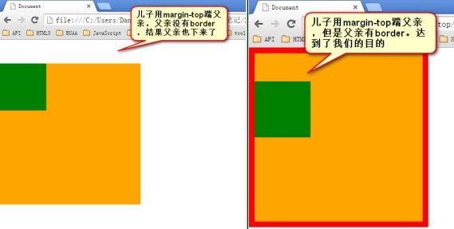

石婉茹
我的名字：石婉茹
QQ:2829339528
wechat:ww28052
敢问路在何方&&路在脚下
95后/本科在读/轻生活/轻梦想
石婉茹
我的名字：石婉茹
QQ:2829339528
wechat:ww28052
敢问路在何方&&路在脚下
95后/本科在读/轻生活/轻梦想
标准文档流中，竖直方向的margin不叠加，以较大的为准。
如果不在标准流，比如盒子都浮动了，那么两个盒子之间是没有塌陷现象的
注意ps:
使用margin:0 auto; 的盒子，必须有width，有明确的width
只有标准流的盒子，才能使用margin:0 auto; 居中
margin:0 auto;是在居中盒子 ，不是居中文本。文本的居中，要使用text-align:center;
margin:0 auto; → 让这个div自己在大容器中居中。text-align: center; → 让这个div内部的文本居中。
如果父亲没有border，那么儿子的margin实际上踹的是“流”，踹的是这“行”。所以，父亲整体也掉下来了

margin这个属性，本质上描述的是兄弟和兄弟之间的距离； 最好不要用这个marign表达父子之间的距离。所以，我们一定要善于使用父亲的padding，而不是儿子的margin。
当出现连续浮动的元素，携带和浮动方向相同的margin时，队首的元素，会双倍marign。
<1>使浮动的方向和margin的方向，相反
<2>使用hack,单独给队首的元素，写一个一半的margin

不用管，因为根本就不允许用儿子踹父亲。所以，如果你出现了3px bug，说明你的代码不标准